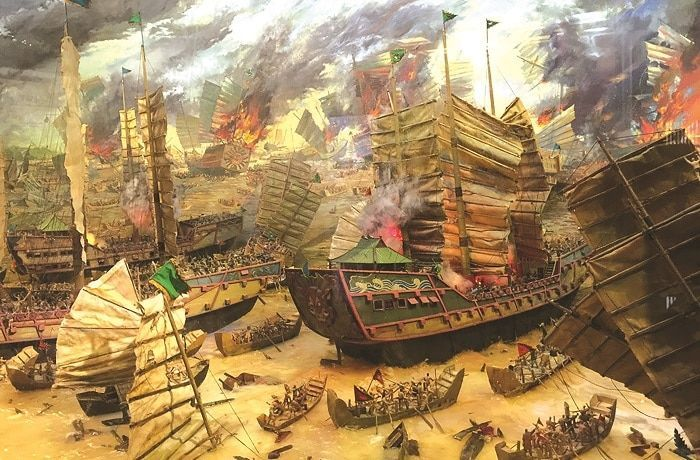
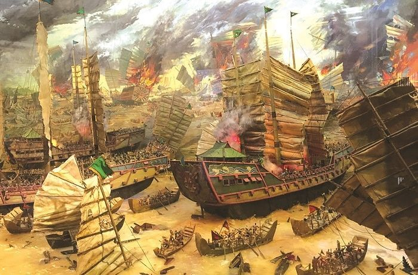
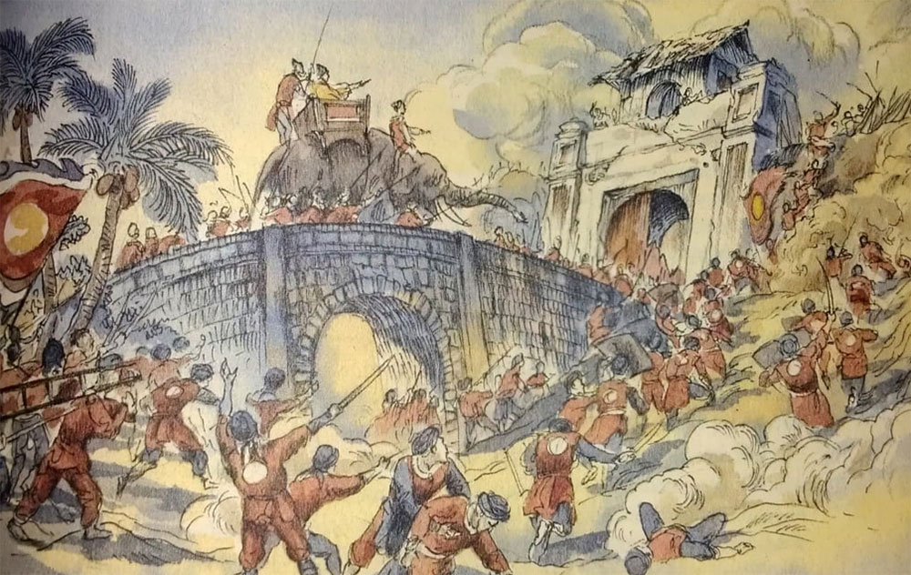
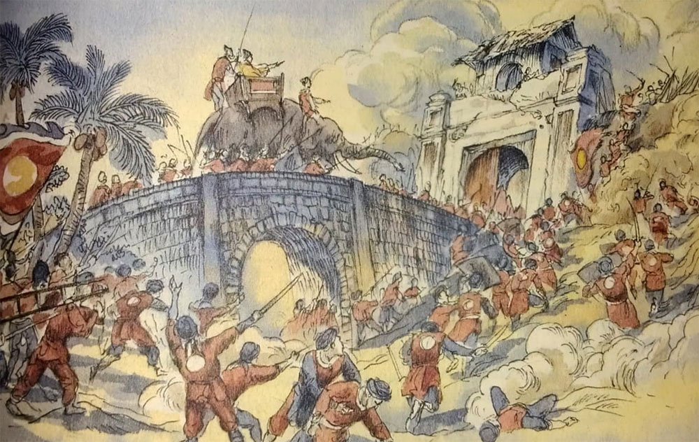

Năm 1010, vua Lý Công Uẩn dời đô từ Hoa Lư ra vùng đất trù phú. Truyền thuyết kể rằng khi vua nhìn thấy rồng bay lên trời tại đây, ông đã đặt tên kinh đô là Thăng Long, nghĩa là "Rồng bay lên".
1010年、李公蘊（リー・コン・ウアン）王は都を華閭からこの豊かな土地に移しました。伝説によれば、王はここで龍が天に昇るのを見て、都を「昇龍（Thăng Long）」と名付けました。
In 1010, King Lý Công Uẩn moved the capital from Hoa Lư to this fertile land. Legend says he saw a dragon rising to the sky here, so he named the capital Thăng Long, meaning "Rising Dragon".
1010년, 이공운(리콩우안) 왕은 수도를 화려에서 이 비옥한 땅으로 옮겼습니다. 전설에 따르면, 왕은 이곳에서 하늘로 올라가는 용을 보고 수도를 승룡(Thăng Long)이라 이름 지었습니다.
1010 मा, राजा ली कोंग उअनले राजधानीलाई Hoa Lư बाट यो उर्बर भूमिमा सार्नुभयो। कथामा भनिएको छ कि उनले यहाँ ड्र्यागन आकाशमा उडेको देखे र राजधानीलाई थăng लोंग, अर्थात् "उदाउँदो ड्र्यागन" नाम दिए।
Pada tahun 1010, Raja Lý Công Uẩn memindahkan ibu kota dari Hoa Lư ke tanah subur ini. Legenda menceritakan bahawa beliau melihat seekor naga naik ke langit di sini, lalu menamakan ibu kota Thăng Long, bermaksud "Naga yang Terbang".
Noong 1010, inilipat ni Haring Lý Công Uẩn ang kabisera mula sa Hoa Lư patungo sa masaganang lupain na ito. Ayon sa alamat, nakita niya ang isang dragon na umaakyat sa langit dito, kaya pinangalanan ang kabisera na Thăng Long, na nangangahulugang "Umaakyat na Dragon".
 

Thời Trần, Hà Nội – Thăng Long chứng kiến những cuộc kháng chiến anh hùng chống quân Nguyên Mông – đội quân hùng mạnh nhất thế giới lúc bấy giờ. Dù thủ đô bị chiếm ba lần và bị đốt phá, ý chí của dân tộc Việt Nam vẫn kiên cường, chưa từng khuất phục. Đây cũng là thời kỳ sản sinh ra nhiều vị anh hùng, nổi bật nhất là Hưng Đạo Đại Vương Trần Quốc Tuấn, bậc danh tướng ba lần đánh bại quân Nguyên Mông, và Phật Hoàng Trần Nhân Tông, người vừa là vua vừa xuất gia sáng lập Thiền phái Trúc Lâm Yên Tử, biểu tượng trí tuệ và tinh thần dân tộc.
陳朝時代、ハノイ（昇龍）は、当時世界最強の軍隊であった元・モンゴル軍に対する英雄的な抗戦の舞台となりました。都は三度占領され、焼き払われたものの、ベトナム民族の意志は揺らぐことなく、決して屈服しませんでした。この時期には多くの英雄が生まれましたが、特に 興道大王チェン・クオック・トゥアン（Trần Quốc Tuấn） は三度にわたり元・モンゴル軍を撃退した名将として知られ、また 仏皇チェン・ニャン・トン（Trần Nhân Tông） は王としてだけでなく、出家して禅宗「竹林禅（Trúc Lâm）」を創始した人物として、知恵と民族精神の象徴となっています。
During the Trần dynasty, Hanoi – Thăng Long witnessed heroic resistances against the Nguyên-Mông army, the most powerful force in the world at that time. Although the capital was occupied three times and burned, the Vietnamese people's determination remained unbroken. This era also produced many heroes, notably Hưng Đạo Đại Vương Trần Quốc Tuấn, the general who defeated the Nguyên-Mông army three times, and Phật Hoàng Trần Nhân Tông, a king who later became a monk and founded the Trúc Lâm Zen sect, symbolizing wisdom and national spirit.
전(Trần) 왕조 시대, 하노이(Thăng Long)는 당시 세계에서 가장 강력한 원·몽골군에 대한 영웅적인 저항의 현장이었습니다. 수도는 세 번 점령되고 불타기도 했지만, 베트남 국민의 의지는 굳건하게 유지되었으며 결코 굴복하지 않았습니다. 이 시기에는 많은 영웅들이 탄생했는데, 특히 흥도대왕 찐꽉투언(Trần Quốc Tuấn)은 원·몽골군을 세 번 물리친 명장으로 유명하며, 불황 찐닌통(Trần Nhân Tông)은 왕이자 출가하여 죽림선(Trúc Lâm) 선종을 창시한 인물로 지혜와 민족 정신의 상징입니다.
त्रần वंशको समयमा, हानोई – थăng लोंगले संसारकै सबैभन्दा शक्तिशाली सेना मानिएको मङ्गोल-एन राजवंशको सेनाविरुद्ध साहसिक प्रतिरोधको दृश्य देख्यो। राजधानी तीन पटक कब्जा भए र जलाइयो पनि, तर भियतनामी जनताको संकल्प अडिग रह्यो। यस युगले धेरै वीरहरु जन्मायो, विशेष गरी हुंग डाओ दाई वाङ त्रần क्वोक तुआन (Trần Quốc Tuấn), जसले मङ्गोल सेनालाई तीन पटक पराजित गरे, र फट होआङ त्रần न्यान तोंग (Trần Nhân Tông), राजा भएको बेला पछि सन्यास लिएर Trúc Lâm ध्यान पद्धति स्थापना गरे, बुद्धिमत्ता र राष्ट्रिय भावनाको प्रतीक हुन्।
Pada zaman Dinasti Trần, Hanoi – Thăng Long menyaksikan perlawanan heroik terhadap tentera Nguyên-Mông, kuasa terkuat di dunia ketika itu. Walaupun ibu kota dikuasai tiga kali dan dibakar, semangat rakyat Vietnam tetap teguh. Zaman ini juga melahirkan banyak wira, terutama Hưng Đạo Đại Vương Trần Quốc Tuấn, panglima yang menewaskan tentera Nguyên-Mông tiga kali, dan Phật Hoàng Trần Nhân Tông, seorang raja yang kemudian menjadi sami dan menubuhkan mazhab Zen Trúc Lâm, simbol kebijaksanaan dan semangat kebangsaan.
Sa panahon ng Dinastiyang Trần, naranasan ng Hanoi – Thăng Long ang mga bayani na paglaban laban sa hukbong Nguyên-Mông, ang pinakamalakas na puwersa sa mundo noong panahong iyon. Bagamat nasakop ang kabisera ng tatlong beses at sinunog, nanatiling matatag ang determinasyon ng mga mamamayang Vietnamese. Ipinanganak sa panahong ito ang maraming bayani, lalo na si Hưng Đạo Đại Vương Trần Quốc Tuấn, ang heneral na tatlong beses tinalo ang hukbong Nguyên-Mông, at si Phật Hoàng Trần Nhân Tông, isang hari na naging monghe at nagtatag ng Trúc Lâm Zen, simbolo ng karunungan at espiritu ng bansa.


Sau khi cuộc kháng chiến chống quân Minh thắng lợi, anh hùng Lê Lợi lên ngôi, lập triều Hậu Lê (1428) – triều đại phong kiến thịnh vượng nhất trong lịch sử Việt Nam.
Truyền thuyết kể rằng, trong lúc lãnh đạo nghĩa quân Lam Sơn gặp nhiều khó khăn, thần Kim Quy đã hiện lên trao cho Lê Lợi gươm báu. Ông đã dùng gươm này cùng nghĩa quân đánh bại quân Minh. Một hôm, khi đang du ngoạn trên hồ, thần Kim Quy hiện lên đòi lại gươm, và Lê Lợi đã trả lại. Hồ vì thế được gọi là Hồ Hoàn Kiếm.
明軍との戦争に勝利した後、英雄のレ・ロイが即位し、後黎朝（1428年）を立てました。これはベトナム史上最も繁栄した王朝です。
伝説によると、ラムソン義勇軍を率いるレ・ロイが困難に直面したとき、神の金亀が現れ、宝剣を授けました。彼はこの剣を使って明軍を打ち破りました。ある日、湖を遊覧していたとき、金亀神が再び現れて剣を返すよう求め、レ・ロイは返しました。この湖はホアンキエム湖と呼ばれています。
After defeating the Ming invaders, hero Lê Lợi ascended the throne and established the Later Lê Dynasty (1428) – the most prosperous feudal dynasty in Vietnam's history.
According to legend, when leading the Lam Sơn uprising, Lê Lợi faced many difficulties. The divine turtle Kim Quy appeared and gave him a magical sword, which he used to defeat the Ming army. One day, while enjoying a boat ride on the lake, Kim Quy appeared again to retrieve the sword, and Lê Lợi returned it. The lake is called Hoan Kiem Lake.
명나라 침략군을 물리친 후, 영웅 레로이는 즉위하여 후 레 왕조 (1428)를 세웠습니다. 이는 베트남 역사상 가장 번영한 왕조입니다.
전설에 따르면, 람손 의군을 이끌던 레로이는 많은 어려움에 직면했을 때 신성한 김귀가 나타나 보검을 주었습니다. 그는 이 검을 사용하여 명나라 군대를 물리쳤습니다. 어느 날 호수에서 유람을 하던 중, 김귀가 다시 나타나 검을 돌려달라 했고, 레로이는 이를 반환했습니다. 이 호수는 호안끼엠 호수로 불립니다.
मिङ आक्रमणकारीलाई पराजित गरेपछि, नायक ले लोई ले सिंहासन सम्हाले र पछि ले वंश (1428) स्थापना गरे – भियतनामको इतिहासमा सबैभन्दा समृद्ध सामन्ती वंश।
किंवदन्ती अनुसार, ल्याम्सन विद्रोहको नेतृत्व गर्दा ले लोईले धेरै कठिनाइहरू सामना गरे। दैवी कछुवा किम कुई देखा पर्यो र उसलाई जादुई तलवार दियो। ले लोईले यस तलवारको प्रयोग गरी मिङ सेनालाई पराजित गरे। एक दिन, तालमा घुम्दै गर्दा किम कुई फेरि देखा पर्यो र तलवार फिर्ता माग्यो, र ले लोईले फिर्ता गर्यो। यस ताललाई होआन किम ताल भनिन्छ।
Selepas menewaskan penceroboh Ming, wira Lê Lợi menaiki takhta dan menubuhkan Dinasti Lê Akhir (1428) – dinasti feudal paling makmur dalam sejarah Vietnam.
Menurut legenda, ketika memimpin pemberontakan Lam Sơn, Lê Lợi menghadapi banyak kesukaran. Kura-kura ilahi Kim Quy muncul dan memberinya pedang ajaib, yang digunakan untuk menewaskan tentera Ming. Suatu hari, semasa menaiki perahu di tasik, Kim Quy muncul semula untuk mengambil kembali pedang itu, dan Lê Lợi menyerahkannya. Tasik itu dinamakan Tasik Hoan Kiem.
Matapos talunin ang mga mananakop na Ming, umupo sa trono ang bayani na si Lê Lợi at itinatag ang Huling Dinastiyang Lê (1428) – ang pinaka-masaganang dinastiyang pyudal sa kasaysayan ng Vietnam.
Ayon sa alamat, habang pinamumunuan ang pag-aalsa ng Lam Sơn, hinarap ni Lê Lợi ang maraming pagsubok. Ang banal na pagong Kim Quy ay lumitaw at ibinigay sa kanya ang makapangyarihang espada, na ginamit niya upang talunin ang hukbong Ming. Isang araw, habang naglilibot sa lawa, muling lumitaw si Kim Quy upang kunin ang espada, at ibinalik ito ni Lê Lợi. Ang lawa ay tinawag na Lawa ng Hoan Kiem.
 

Hoàng đế Quang Trung lãnh đạo nghĩa quân Tây Sơn đại phá 29 vạn quân Thanh ngay tại thủ đô. Ông là vị hoàng đế bách chiến bách thắng với những chiến công vang dội. Ông chỉ trị vì trong 4 năm, và sự ra đi của ông để lại niềm tiếc nuối vô hạn trong lịch sử dân tộc Việt Nam.
クアンチュン皇帝は、タイソン義軍を率いて首都で29万の清軍を大破しました。 彼は戦無不勝の皇帝で、その輝かしい戦功は広く知られています。 皇帝はわずか4年間在位し、その死はベトナム民族の歴史における大きな惜別として残りました。
Emperor Quang Trung led the Tây Sơn insurgent army to decisively defeat 290,000 Qing troops right at the capital. He was a victorious emperor in every battle with remarkable achievements. He only ruled for 4 years, and his passing left an immeasurable regret in the history of the Vietnamese nation.
황제 광중은 타이손 의군을 이끌고 수도에서 29만 청군을 대파했습니다. 그는 전승무적의 황제로, 눈부신 전공을 남겼습니다. 황제는 단 4년 동안만 통치했으며, 그의 죽음은 베트남 민족 역사에서 헤아릴 수 없는 아쉬움으로 남았습니다.
सम्राट क्वांग त्रुंग ले तय सोन विद्रोही सेना लाई नेतृत्व गर्दै राजधानीमा २,९ लाख चिनियाँ सेना लाई निर्णायक रूपमा पराजित गरे। उनी एक हरेक युद्धमा विजयी सम्राट हुनुहुन्थ्यो र अद्भुत सफलता हासिल गर्नुभयो। उनले केवल ४ वर्ष शासन गर्नुभयो, र उनको निधनले भियतनाम जातिको इतिहासमा अपार क्षति र अप्रिय क्षण छोड्यो।
Maharaja Quang Trung mengetuai tentera pemberontak Tây Sơn untuk mengalahkan 290,000 tentera Qing dengan keputusan di ibu kota. Beliau adalah seorang maharaja yang menang dalam setiap pertempuran dengan pencapaian yang luar biasa. Beliau hanya memerintah selama 4 tahun, dan pemergiannya meninggalkan penyesalan yang tak terhingga dalam sejarah bangsa Vietnam.
Pinangunahan ni Emperador Quang Trung ang hukbong himagsikan ng Tây Sơn upang tuluyang talunin ang 290,000 hukbong Qing sa mismong kabisera. Siya ay isang emperador na laging nagwawagi sa bawat laban na may kahanga-hangang tagumpay. Siya ay namuno lamang sa loob ng 4 na taon, at ang kanyang paglisan ay nag-iwan ng walang hanggang panghihinayang sa kasaysayan ng bayan ng Vietnam.

Năm 1945, tại Quảng trường Ba Đình, Chủ tịch Hồ Chí Minh đọc Bản Tuyên ngôn Độc lập, khai sinh ra nước Việt Nam Dân chủ Cộng hòa.
Đây là khoảnh khắc lịch sử, đánh dấu sự kết thúc chế độ thực dân và khởi đầu cho một thời kỳ mới của dân tộc Việt Nam.
1945年、バーディン広場でホー・チ・ミン主席が独立宣言を読み上げ、ベトナム民主共和国が誕生しました。
これは植民地支配の終わりと、ベトナム民族の新たな時代の始まりを示す歴史的瞬間です。
In 1945, at Ba Dinh Square, President Ho Chi Minh read the Declaration of Independence, founding the Democratic Republic of Vietnam.
This was a historic moment marking the end of colonial rule and the beginning of a new era for the Vietnamese nation.
1945년, 바딘 광장에서 호찌민 주석이 독립선언문을 낭독하며 베트남 민주공화국이 탄생했습니다.
이는 식민지 지배의 종식과 베트남 민족의 새로운 시대 시작을 알리는 역사적 순간입니다.
1945 मा, बाडिन स्क्वायरमा, अध्यक्ष हो ची मिन्ह ले स्वतन्त्रता घोषणापत्र पढेर भियतनाम लोकतान्त्रिक गणराज्यको स्थापना गरे।
यो उपनिवेश शासनको अन्त्य र भियतनाम जातिको नयाँ युगको सुरुवातको ऐतिहासिक क्षण हो।
Pada tahun 1945, di Dataran Ba Đình, Presiden Hồ Chí Minh membacakan Perisytiharan Kemerdekaan, menubuhkan Republik Demokratik Vietnam.
Ini adalah detik bersejarah yang menandakan berakhirnya pemerintahan kolonial dan permulaan era baru bagi bangsa Vietnam.
Noong 1945, sa Ba Dinh Square, binasa ni Pangulong Hồ Chí Minh ang Deklarasyon ng Kalayaan, na nagtatag ng Democratic Republic ng Vietnam.
Ito ay isang makasaysayang sandali na nagmamarka sa pagtatapos ng kolonyal na pamamahala at pagsisimula ng isang bagong yugto para sa bansang Vietnam.
Từ ngày 19/12/1946 đến 17/2/1947, quân và dân Hà Nội kiên cường chiến đấu 60 ngày đêm, mở đầu cho cuộc kháng chiến chống thực dân Pháp.
Dù trang bị thô sơ, họ chiến đấu dũng cảm, giành từng căn nhà, từng góc phố, thể hiện tinh thần “Quyết tử cho Tổ quốc quyết sinh”.
Chiến thắng này không chỉ là chiến thắng quân sự, mà còn là chiến thắng về tinh thần, mở đầu cho kháng chiến trường kỳ của dân tộc Việt Nam.
1946年12月19日から1947年2月17日まで、ハノイの軍と市民は60日間戦い抜き、フランス植民地に対する抵抗戦争の始まりとなりました。
装備が乏しくても、彼らは勇敢に戦い、家屋や街角を守り抜き、「国家のために命を捧げる」精神を示しました。
この勝利は軍事的勝利だけでなく、精神的勝利でもあり、ベトナム民族の長期抵抗戦争の幕開けとなりました。
From December 19, 1946 to February 17, 1947, the people and soldiers of Hanoi bravely fought for 60 days and nights, marking the beginning of the resistance against French colonialism.
Despite primitive equipment, they fought courageously, taking back every house and street corner, showing the spirit of "Determined to die for the country, determined to live".
This victory was not only military but also spiritual, marking the start of Vietnam's long-term resistance.
1946년 12월 19일부터 1947년 2월 17일까지 하노이의 군인과 시민들은 60일 밤낮으로 용감하게 싸워 프랑스 식민지에 대한 저항 전쟁을 시작했습니다.
장비가 부족했음에도 불구하고, 그들은 집과 골목 하나하나를 지키며 "조국을 위해 죽고 조국을 위해 살겠다"는 정신을 보여주었습니다.
이 승리는 군사적 승리뿐만 아니라 정신적 승리이기도 하며, 베트남 민족의 장기 저항 전쟁의 시작을 알렸습니다.
१९४६ डिसेम्बर १९ देखि १९४७ फेब्रुअरी १७ सम्म, हनोईका सैनिक र नागरिकहरूले ६० दिन र रातसम्म साहसपूर्वक लडे, फ्रेन्च उपनिवेशवादको विरुद्ध प्रतिरोधको सुरुवात गरे।
असाधारण हतियार भए तापनि, उनीहरूले प्रत्येक घर र गल्लीलाई बचाउँदै "देशको लागि मर्न र देशको लागि बाँच्न दृढ" भावना देखाए।
यो विजय केवल सैन्य विजय मात्र होइन, मानसिक विजय पनि हो, र भियतनामको दीर्घकालीन प्रतिरोधको सुरुवात बन्यो।
Dari 19 Disember 1946 hingga 17 Februari 1947, rakyat dan tentera Hanoi berjuang dengan berani selama 60 hari dan malam, menandakan permulaan penentangan terhadap kolonialisme Perancis.
Walaupun dengan peralatan yang primitif, mereka berjuang dengan gagah berani, mempertahankan setiap rumah dan sudut jalan, menunjukkan semangat "Bersedia mati untuk negara, bersedia hidup".
Kemenangan ini bukan sahaja kemenangan ketenteraan, tetapi juga kemenangan dari segi semangat, menandakan permulaan perjuangan jangka panjang rakyat Vietnam.
Mula noong Disyembre 19, 1946 hanggang Pebrero 17, 1947, ang mga tao at sundalo ng Hanoi ay matapang na nakipaglaban ng 60 araw at gabi, na nagmamarka ng simula ng paglaban laban sa kolonyalismong Pranses.
Sa kabila ng kakulangan sa kagamitan, nakipaglaban sila nang buong tapang, sinakop ang bawat bahay at kanto ng kalye, ipinapakita ang espiritu ng "Handang mamatay para sa bayan, handang mabuhay".
Ang tagumpay na ito ay hindi lamang panseguridad na tagumpay kundi pati na rin espiritwal, na nagmamarka ng simula ng pangmatagalang paglaban ng sambayanang Vietnamese.
Cuối năm 1972, khi Hội nghị Paris bế tắc, Tổng thống Mỹ Nixon ra lệnh thực hiện Chiến dịch Linebacker II nhằm "đưa miền Bắc trở về thời kỳ đồ đá".
Trong 12 ngày đêm liên tục (18–29/12/1972), Mỹ huy động gần 200 máy bay B-52, thực hiện khoảng 3.920 lần xuất kích, thả xuống Hà Nội và Hải Phòng hơn 20.000 tấn bom.
Dù trang bị hiện đại, Mỹ không thể vượt qua tinh thần chiến đấu kiên cường của quân và dân Việt Nam, khiến 81 máy bay Mỹ bị bắn rơi, trong đó 34 chiếc B-52.
Hà Nội hứng chịu thiệt hại nặng nề: 278 người dân thiệt mạng, 178 trẻ mồ côi, khoảng 2.000 ngôi nhà, trường học, đền chùa, rạp hát, trạm xá bị hư hại, trong đó 534 ngôi nhà bị phá hủy hoàn toàn. Bom B-52 còn trúng bệnh viện Bạch Mai, khiến 31 y bác sĩ và bệnh nhân thiệt mạng, trong đó có một nữ y tá đang mang thai 3 tháng.
Chiến dịch thất bại buộc Mỹ phải ngừng ném bom và quay lại đàm phán Paris. Sự kiện được người Việt Nam gọi là “Điện Biên Phủ trên không”, ghi dấu một trong những chiến thắng tinh thần quan trọng.
1972年末、パリ協定が行き詰まると、アメリカのニクソン大統領はラインバッカーII作戦を実施し、「北ベトナムを石器時代に戻す」ことを目指しました。
12日間連続（1972年12月18日～29日）、アメリカは約200機のB-52爆撃機を動員し、約3,920回の出撃でハノイとハイフォンに2万トン以上の爆弾を投下しました。
最新装備を持ちながらも、ベトナム人民の勇敢な抵抗により、81機のアメリカ機が撃墜, そのうち34機がB-52でした。
ハノイは甚大な被害を受け、住民278人が死亡、178人の孤児、約2,000軒の建物が被害を受け、うち534軒が完全に破壊されました。B-52の爆弾はバックマイ病院にも命中し、医師と患者31人が死亡、妊娠3か月の女性看護師も含まれます。
作戦は失敗し、アメリカは爆撃を停止しパリでの交渉に戻らざるを得ませんでした。この出来事はベトナムで「空のディエンビエンフー」と呼ばれ、精神的勝利の象徴となりました。
At the end of 1972, as the Paris Peace Talks stalled, US President Nixon ordered Operation Linebacker II to "bring North Vietnam back to the Stone Age".
During 12 consecutive days and nights (Dec 18–29, 1972), the US deployed nearly 200 B-52 bombers, conducting approximately 3,920 sorties, dropping over 20,000 tons of bombs on Hanoi and Haiphong.
Despite advanced equipment, the US could not overcome the resilience of Vietnamese forces and civilians, resulting in 81 US aircraft shot down, including 34 B-52s.
Hanoi suffered severe damage: 278 civilians killed, 178 orphans, around 2,000 buildings damaged, including 534 completely destroyed. B-52 bombs hit Bach Mai Hospital, killing 31 medical staff and patients, including a 3-month pregnant nurse.
The campaign failed, forcing the US to stop bombing and return to Paris negotiations. This event is known in Vietnam as the "Dien Bien Phu in the Air", marking a major spiritual victory.
1972년 말, 파리 협상이 교착 상태에 빠지자, 미국 닉슨 대통령은 라인배커 II 작전을 명령하여 "북베트남을 석기 시대로 되돌린다"고 하였습니다.
12일 밤낮 연속 (1972년 12월 18일~29일), 미국은 약 200대의 B-52 폭격기를 동원해 약 3,920회 출격으로 하노이와 하이퐁에 2만 톤 이상의 폭탄을 투하했습니다.
최신 장비에도 불구하고 미국은 베트남군과 시민의 저항을 넘지 못해 81대의 미국 항공기 격추, 그중 34대가 B-52였습니다.
하노이는 심각한 피해를 입었고, 민간인 278명 사망, 고아 178명, 약 2,000채의 건물이 피해를 입었으며, 그 중 534채는 완전히 파괴되었습니다. B-52 폭탄은 박마이 병원에도 명중해 의료진과 환자 31명이 사망했고, 임신 3개월 여성 간호사도 포함되었습니다.
작전은 실패했고, 미국은 폭격을 중단하고 파리 협상으로 돌아갔습니다. 이 사건은 베트남에서 "공중 디엔비엔푸"로 알려져 있으며, 중요한 정신적 승리를 상징합니다.
1972 को अन्त्यमा, जब पेरिस शान्ति वार्ता अड्कियो, अमेरिकी राष्ट्रपति निक्सनले अपरेसन लाइनब्याकर II सुरु गरे, जसले "उत्तर भियतनामलाई ढुङ्गाको युगमा फर्काउन" खोज्यो।
१२ लगातार दिनरात (18–29 डिसेम्बर 1972) मा, अमेरिकीले करिब २०० वटा B-52 बम्बिङ विमान परिचालन गर्यो, लगभग ३,९२० मिटर उडान गरेर हनोई र हैफोङमा २०,००० टन भन्दा बढी बम खसाल्यो।
अत्याधुनिक उपकरण भए पनि अमेरिकीले भियतनामी सेनासँग र जनतासँगको अडिग प्रतिरोधलाई पार गर्न सकेन, जसका कारण ८१ अमेरिकी विमान दुर्घटनामा पर्यो, जसमा ३४ B-52 विमान पनि थिए।
हनोईले ठूलो क्षति भोग्यो: २७८ नागरिक मारिए, १७८ बालबालिका अनाथ भए, करिब २,००० भवनहरु क्षतिग्रस्त भए, जसमा ५३४ पूर्ण रूपमा ध्वस्त भए। B-52 बम ब्याक माई अस्पताल मा पनि लाग्यो, जसमा ३१ स्वास्थ्यकर्मी र बिरामी मारिए, जसमा ३ महिने गर्भवती नर्स पनि थिइन्।
यो अभियान असफल भयो र अमेरिकीलाई बमबारी रोक्न र पेरिस वार्तामा फर्कन बाध्य पार्यो। यस घटनालाई भियतनाममा "आकाशमा Điện Biên Phủ" भनिन्छ, जसले ठूलो मानसिक विजयको प्रतीक हो।
Pada penghujung 1972, apabila Rundingan Paris buntu, Presiden AS Nixon mengarahkan Operasi Linebacker II untuk "mengembalikan Vietnam Utara ke Zaman Batu".
Sepanjang 12 hari dan malam berturut-turut (18–29 Disember 1972), AS mengerahkan hampir 200 pembom B-52, menjalankan kira-kira 3,920 sortie, menurunkan lebih 20,000 tan bom ke Hanoi dan Haiphong.
Walaupun bersenjata canggih, AS tidak dapat menandingi ketahanan tentera dan rakyat Vietnam, menyebabkan 81 pesawat AS ditembak jatuh, termasuk 34 B-52.
Hanoi mengalami kerosakan teruk: 278 orang awam terbunuh, 178 anak yatim, kira-kira 2,000 bangunan rosak termasuk 534 yang musnah sepenuhnya. Bom B-52 juga terkena Hospital Bach Mai, menyebabkan 31 kakitangan perubatan dan pesakit terbunuh, termasuk seorang jururawat hamil 3 bulan.
Operasi gagal, memaksa AS menghentikan pengeboman dan kembali ke rundingan Paris. Peristiwa ini dikenali di Vietnam sebagai "Điện Biên Phủ di Udara", menandakan kemenangan rohani besar.
Sa katapusan ng 1972, nang maging patagilid ang Paris Peace Talks, iniutos ni Pangulong Nixon ng US ang Operation Linebacker II upang "ibalik ang Hilagang Vietnam sa Panahong Bato".
Sa loob ng 12 magkasunod na araw at gabi (18–29 Disyembre 1972), nagpadala ang US ng halos 200 B-52 bombers, nagsagawa ng humigit-kumulang 3,920 sorties, at bumagsak ng mahigit 20,000 tonelada ng bomba sa Hanoi at Haiphong.
Sa kabila ng modernong kagamitan, hindi nalampasan ng US ang tibay ng mga puwersa at mamamayang Vietnamese, na nagresulta sa 81 eroplano ng US na naitaboy, kabilang ang 34 B-52.
Nakaranas ang Hanoi ng matinding pinsala: 278 sibilyan ang namatay, 178 ulilang bata, humigit-kumulang 2,000 gusali ang nasira, kabilang ang 534 na ganap na nawasak. Ang mga bomba ng B-52 ay tumama rin sa Bach Mai Hospital, na ikinamatay ng 31 medikal na tauhan at pasyente, kabilang ang isang 3-buwang buntis na nars.
Nabigo ang kampanya, pinilit ang US na ihinto ang pambobomba at bumalik sa negosasyon sa Paris. Kilala ito sa Vietnam bilang "Điện Biên Phủ sa Hangin", na tanda ng malaking espiritwal na tagumpay.